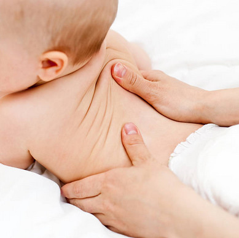
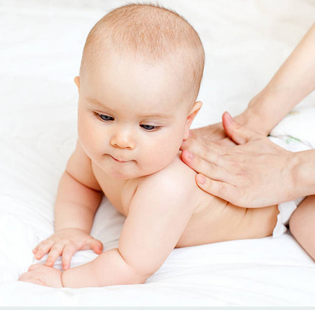

Pour les bébés
Il est important de traiter les bébés naissants car ils sont longtemps dans la même position intra-urérine. Cette position peut provoquer un torticolis congénital (tête inclinée et tournée plus d'un coté).
Il est recommandé de coucher les bébés sur le dos dû au syndrome de la mort subite. Comme le bébé aura la tête appuyée souvent du même coté, ceci risque d'amener un méplat occipital (plagiocéphalie). Si la difformité de la tête est modérée à sévère, le bébé devra porter un casque pour quelques mois.
L'ostéopathie traite pour prévenir la plagiocéphalie en réalignant les vertèbres et ce dès la naissance.

